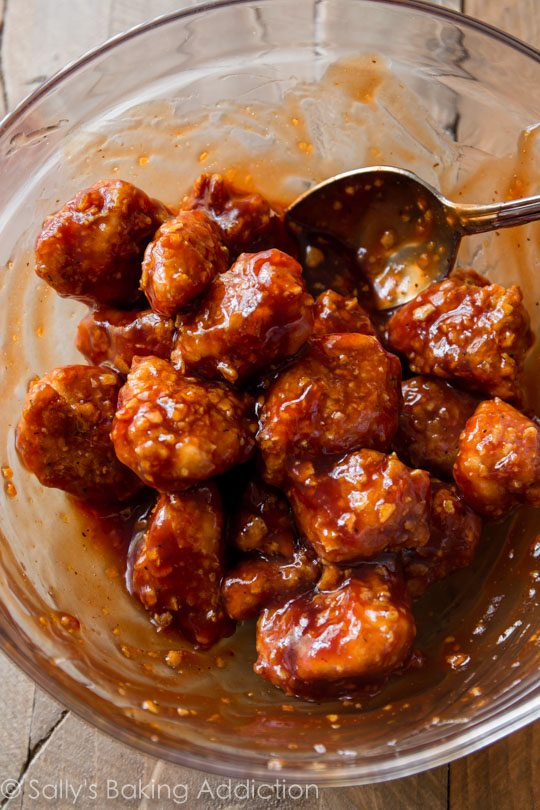

Odin Recipes
Teriyaki Popcorn Chicken
Go back to homepage.

Description
A family favorite from Hawai'i!
Ingredients
- 1 cup of white rice
- 1 chicken breast
- 1 cup of teriyaki sauce
- 1 cup of breading
- 1 egg
Cooking Instructions
- Start your rice in your rice cooker.
- Dice your chicken into 1/2 inch to 1 inch cubes.
- Break egg (with yolk) into mixing bowl
- Prepare another mixing bowl with breading in it.
- Dip diced chicken into egg, and then coat in breading.
- Heat a pot of oil on medium/medium-high.
- Carefully place breaded chicken into hot oil, cook until golden brown.
- Once golden brown, remove chicken and place on a paper towel to soak up excess oil.
- Toss finished chicken with teriyaki sauce.
- Serve over a bed of rice.